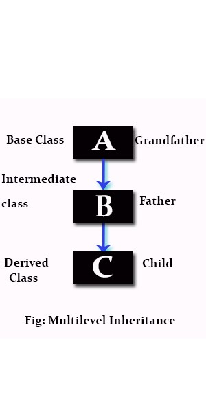

TA
Hiring TAs for OOP!
Hiring TAs
2019년 2학기 객체지향프로그래밍(Java) TA 모집 안내
- 강의: 객체지향프로그래밍(Java) (CSI2102-02)
- 업무: 강의게시판 관리 및 채점업무 지원 등
- 보수: TA 재학조교장학금(수강인원 기준, 200여만원) + 추가수당
- 연락처 : 이진호 (leejinho@yonsei.ac.kr)
위와 같이 TA학생을 모집합니다. 주당 평균 1-2시간 정도의 시간이 소요될 것으로 생각하며, 예상되는 작업은 크게 아래의 세 가지입니다. (수업 시간에 참석할 필요는 특별한 경우를 제외하고 없습니다.)
업무에 투자하는 시간 및 개인의 역량에 따라 조교장학금 외에 추가 수당이 지급될 수 있습니다.

1. 강의 지원 및 게시판 관리
YSCEC 게시판을 관리하고 혹시 학생들의 질문이 있다면 가능한 선에서 답해 줍니다. 본인의 교육 철학을 작게나마 펼쳐볼 수 있습니다.
2. 숙제 및 시험 채점
숙제 및 시험의 채점을 함께 합니다. 대부분의 숙제와 시험은 자동화 (OMR, Autograder) 등을 이용하여 업무량을 줄일 계획이지만 시스템 관리 등의 업무가 발생하게 됩니다.
3. (Optional) Term Project
과목 Term Project를 지원합니다. 내용은 간단한 계산기, 혹은 안드로이드 애플리케이션이 될 예정이지만, 본인이 좋은 아이디어가 있을 경우 반영할 수 있습니다.